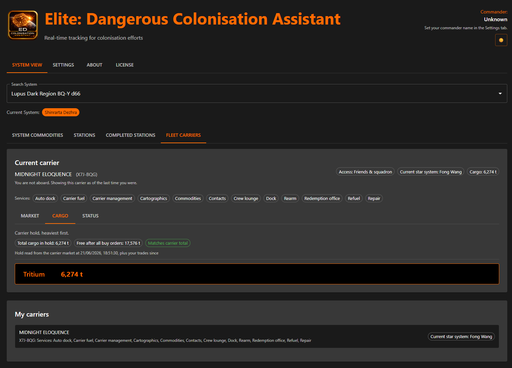
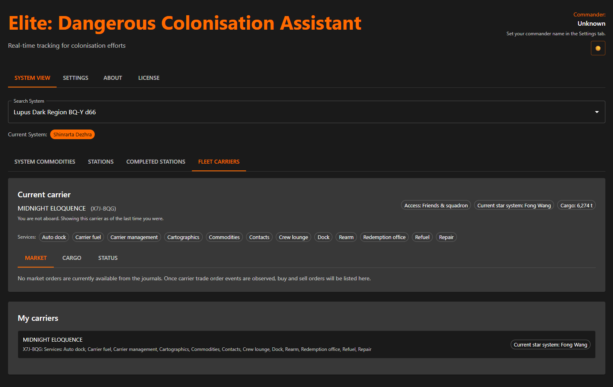
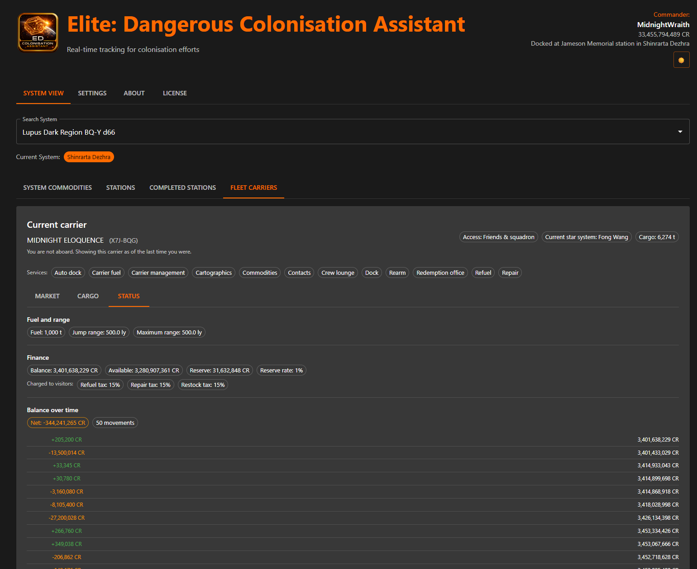

A carrier is never docked anywhere. It holds station in a star system or it has a jump booked and is about to leave. And what it is carrying does not depend on where you are standing, so EDCA shows it whether or not you are aboard.
What the carrier is actually holding, commodity by commodity. The hold is a real inventory rather than a list of what you happen to have on sale; it says how current it is: the game rewrites the market export only when you dock and open the commodity market, so EDCA carries it forward with your own trades and tells you when the two disagree.

The hold, with free space after outstanding buy orders and a note of when the breakdown was read.
Buy and sell orders as the carrier is currently offering them, drawn from the trade orders in your journal rather than from whatever was configured months ago. A cancelled order stops being advertised.

The market tab, saying plainly when there are no active orders rather than showing stale ones.
What the carrier runs on and what it is worth. Anything your journal has not reported is left out rather than shown as a zero, so an empty gauge always means empty.
Tritium in the tank, with the current jump range against the maximum, so you know whether the next jump is on before you book it.
Balance, available funds and the reserve, plus the tax your refuel, repair and restock services charge visitors.
Every movement in the balance, with the window it was observed over. No cause is attached to any of them, because the journal records no upkeep event and nothing in it separates upkeep from a tritium purchase or from trade income.
Who is running each service, which services are hired, which are switched off and which were never bought.

Fuel, finances and the balance history in one place.
Book a jump and EDCA names the destination and counts down to departure, because a booked jump does not move the carrier: it sits exactly where it is until its departure time. Once it arrives, the countdown clears itself. Cancel the jump and it goes back to holding station.
The same distinction runs through the whole view. Whether you are aboard is a fact about you, said once and never confused with the carrier's own state.
Install, first launch and putting it on a tablet beside the cockpit.
Continue